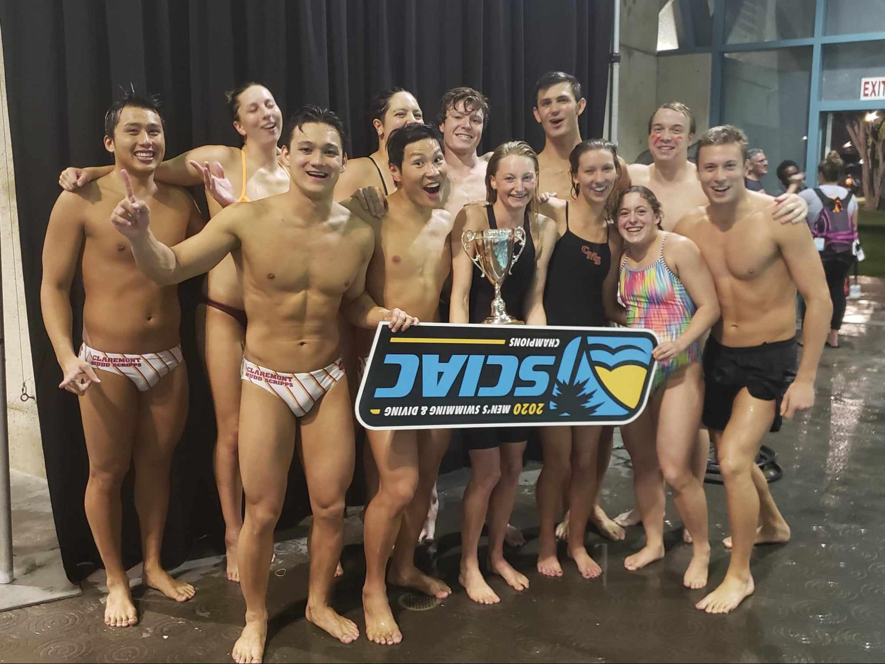
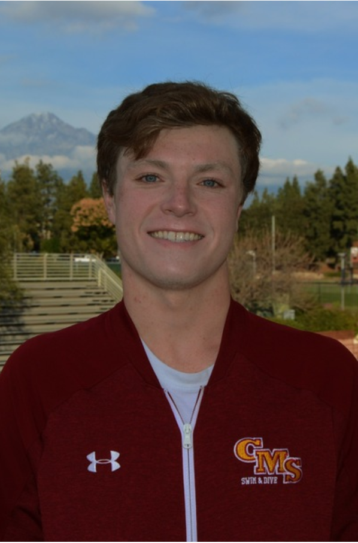
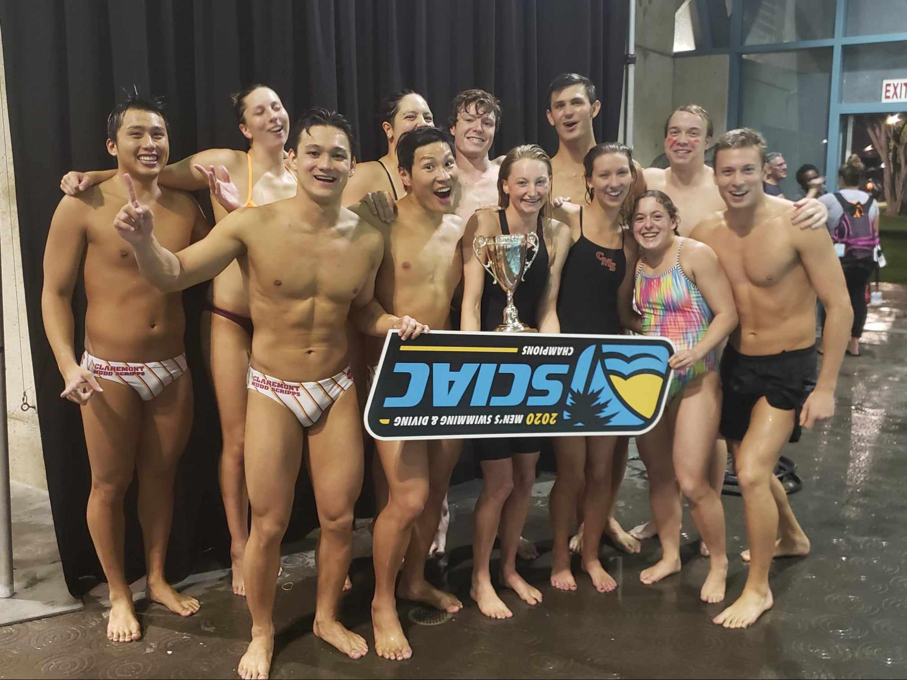
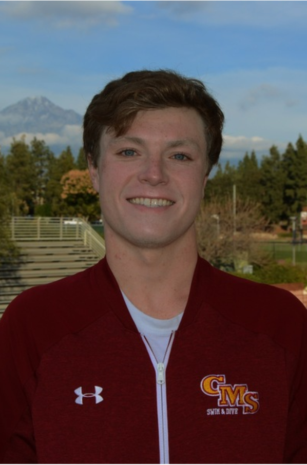

Hobbies & Interests✨::
Swimming 🏊♂️🏆:
Lifeguard, Glendora Country Club, Glendora CA (Summer 2018 to 2019):
- Red Cross Certification
Swim Coach, Glendora Country Club, Glendora CA (Spring 2018 to Summer 2019):
- Designed and implemented daily workouts to help athletes further gain or enhance competencies
- Communicated directly with parents to address participant progress and challenges
- Maintained a safe, fun, and competitive learning environment for participants
-Employed Data Analysis to analyze team and individual swimming performance to enhance coaching methods
College Athlete, Claremont-Mudd-Scripps Swim Team, Harvey Mudd College (2018-2022):
- Attended meets and practices while maintaining a rigorous course load
- Collaborate with coaches and teammates to meet high standard of performance
- Implement techniques to improve performance; times achieved No. 3 in CMS history (200 fly) and No. 8 (1650 free)
Varsity Student Athlete, Diamond Bar Swim Team, Diamond Bar High School (2014-2018)
AI and Coding 🤖👨💻:
My favorite languages are Python, Golang, and Rust.
I’m always interested in trying out and learning new languages.
Lately I’ve been exploring ComfyUI as a highly customizable stable diffusion interface as well as Autogen Studio as the premiere innovation in guiding and utilizing generative AI models such as OLLama and ChatGPT in an automated format.
My mathematical interests primarily lie in the study of Linear Algebra and Probability which interest me both abstractly as well as pragmatically in their application towards Machine Learning and Data Analytics.
I love websites like https://www.developforgood.org/ which motivate and enable me to apply my skills and interests towards a shared positive future.
Hiking🚵♂️🌄:
My friends and I love to keep an active lifestyle!
I’ve found exploring nature is an excellent avenue for this.
Dog Training🐕🦴:
Like many others I am a dog person!
I have trained my dog to achieve service dog certification.
I find joy in teaching whether it be as a math tutor, swim coach or dog trainer.
Crossfit 🏋️♂️🦍:
Living a healthy lifestyle is very important to me.
Crossfit San Dimas has been paramount to the upkeep of this value.